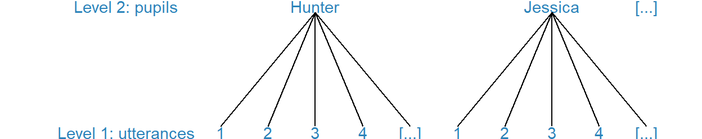
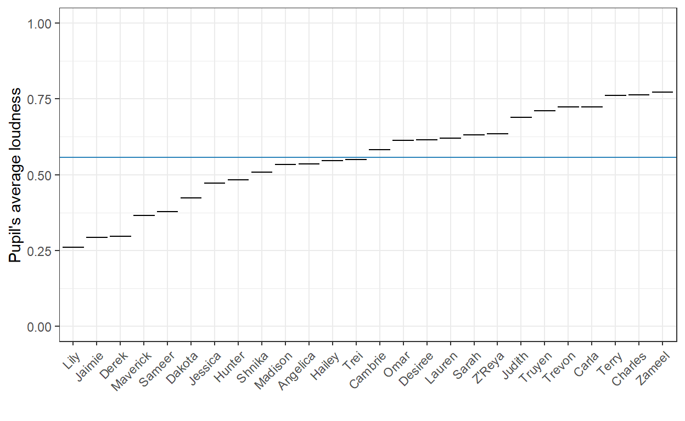
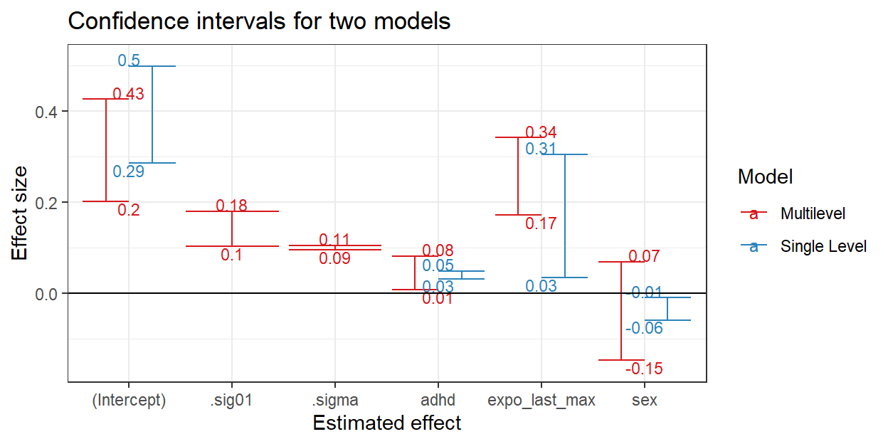

In Session 1, we have predicted voice loudness of pupils from the loudness of preceding utterances of other pupils.
Our reasoning: If we can predict voice loudness from the loudness of preceding utterances, pupils seem to react to the loudness of others. Loudness, then, is a group or network process; it seems to be governed by peer influence.
We have, however, committed a statistical sin: We pretended that different voice events for the same pupil are comparable to voice events of different pupils.
This is a statistical sin because different voice events for the same pupil are clustered data, not independent data. Utterances from the same pupil tend to have a similar loudness level. If we know the loudness of one utterance, we can better predict the loudness of other utterances by this pupil.
We have to take these dependencies into account. To this end, we use multilevel regression models. We have pupils as one level and utterances as another level. A pupil may make several utterances, so we say that utterances are nested within pupils.

With event data, we usually have repeated observations, so clustered data. It is therefore worthwhile to understand the basics of multilevel regression models.
Have a look at average loudness of pupils during the break.

There are quite notable differences between pupils. If Zameel is a loud one (at the right of the figure), knowing that the speaker is Zameel helps us predict a loud voice.
Zameel’s voice is louder than the average across all pupils (the horizontal blue line in the figure). In contrast, Lily’s voice is less loud than the average voice.
Individuals’ average score levels are modeled as varying (also called: random) intercepts in a multilevel regression model.
In our example, we estimate a ‘personal loudness level’ for each pupil, which is called an (individual) intercept. Because different pupils have different personal loudness levels (intercepts), we say that the intercepts vary across pupils.
The variation among pupils is calculated from the deviations of individual loudness levels (short black lines in the figure) from average loudness across all pupils (blue line). The variation statistics are called variance or standard deviation.
If you are familiar with analysis of variance, then it may help to know that varying intercepts are very much like analysis of variance in which each pupil represents a group.
Multilevel regression models cannot be estimated with the packages that are automatically loaded when we start R. We must load and use a new package.
We use the lme4 package, which was installed on your computer when you installed this tutorial.
The lmer() function in this package estimates multilevel models with a dependent/outcome variable that is numerical, like voice loudness. It works very much the same as the lm() function. Just add varying intercepts by adding (1 | ID) to the predictors:
1 represents the intercept,| means: “let it vary by”,ID is the variable identifying pupils (pupil ID).Let us have a look at an example.
# Ensure that the lme4 package is loaded ('has started').
# Only need once per R session.
library(lme4)
# Estimate the regression model and store it as multilevel_model_1.
multilevel_model_1 <- lmer(loudness ~ expo_last_max + sex + adhd + (1 | ID), data = loudness_events)
# Show the stored results with the summary() function.
summary(multilevel_model_1)Linear mixed model fit by REML ['lmerMod']
Formula: loudness ~ expo_last_max + sex + adhd + (1 | ID)
Data: loudness_events
REML criterion at convergence: -1096.6
Scaled residuals:
Min 1Q Median 3Q Max
-3.9321 -0.5902 0.0700 0.6016 3.3519
Random effects:
Groups Name Variance Std.Dev.
ID (Intercept) 0.02004 0.1416
Residual 0.01000 0.1000
Number of obs: 688, groups: ID, 26
Fixed effects:
Estimate Std. Error t value
(Intercept) 0.31401 0.05870 5.350
expo_last_max 0.25725 0.04336 5.933
sex -0.03900 0.05650 -0.690
adhd 0.04470 0.01918 2.330
Correlation of Fixed Effects:
(Intr) exp_l_ sex
expo_lst_mx -0.572
sex -0.467 -0.009
adhd -0.426 0.007 -0.098There are now two sets of effects:
The random effects are not very informative. They tell us that loudness level varies among pupils because the variance or standard deviation is not zero.
Check the number of observations (Number of obs:) in the results output. We have 688 utterances (level 1 observations) and 26 groups, each representing a pupil via the ID variable.
The fixed effects now do not have a p value, as indicated by Pr(>|t|) in an ordinary regression. Anyway, it is better to have a look at the confidence intervals.
Exercise
.sig01 and .sigma). Tip: Use the function you learned in Tutorial 1.# Estimate the regression model and store it as multilevel_model_1.
multilevel_model_1 <- lmer(loudness ~ expo_last_max + sex + adhd + (1 | ID), data = loudness_events)
# Show the confidence intervals of the effects (add your code).The confidence intervals of the random effects give the most plausible values of the standard deviations (sigma), which is a measure of variation:
.sig01: the standard deviation of the intercepts, that is, the variation in pupil loudness levels;.sigma: the standard deviation of the residuals, that is, the variation in prediction errors.Standard deviations are always positive (zero or larger), so we focus on the lower limit (2.5 % column). If the lower limit of .sig01 is clearly above zero, we are confident that loudness levels differ systematically across the pupils.
So what are the estimated loudness levels of the pupils? Use the ranef() (for random effects) function on the estimated multilevel model.
# Estimate the regression model and store it as multilevel_model_1.
multilevel_model_1 <- lmer(loudness ~ expo_last_max + sex + adhd + (1 | ID), data = loudness_events)
# Show the estimated loudness levels of the pupils.
ranef(multilevel_model_1)We get 26 values, one for each pupil.
Note that these numbers show how much a pupil’s loudness is above (positive number) or below (negative number) average loudness across all pupils, which is represented by the (fixed) effect of the intercept, which is 0.31 here.
So the pupil with ID 1 (Hunter) scores -0.09 below the overall average. This is quite in line with the graph in the second section of this tutorial.
Why all the hassle with a multilevel model?
Because we want to avoid the statistical sin of acting as if clustered data are independent data. If we commit this sin, we cannot trust the p values and confidence intervals.
Compare the confidence intervals for the effects of exposure, sex, and adhd for a model with (red) and without (blue) varying intercepts for individual loudness level in the below figure.

Excercises
expo_last_max). How do the confidence intervals differ?We are less confident about the effects of pupil’s ADHD score and sex on voice loudness in a multilevel model than in a single-level model. The red confidence intervals in the above figure are larger (wider) than the blue ones.
As a consequence, the effect of sex can both be positive (girls have louder voices than boys) and negative (boys are louder than girls) in the multilevel model, whereas we thought that we could conclude that the effect is negative (boys are louder) in the single level model. We do not reach the same conclusion!
Acting as if every pupil had only one utterance in the single-level model, we pretend to have 688 different pupils. However, we only have 26 pupils. That is much less information to base our conclusions on, so we our less sure: these confidence intervals are larger in the multilevel model.
In contrast, the effect of exposure on loudness is truly based on 688 different utterances. Here, the information that we use is the same in the single-level and multilevel models, so the confidence interval of the effect in the multilevel model does not have to be larger than in the single-level model.
In this specific situation, it is actually shorter. We can be more precise on the plausible values of the exposure effect. With the multilevel model, we can rule out small effect sizes that were plausible in the single-level model (blue confidence interval).
With clustered data, such as repeating data, a multilevel model:
That’s worth the effort!
In addition to having individual loudness levels, some pupils may be more sensitive to loudness of other pupils. They are more susceptible to adjusting their voice loudness to their peers than other pupils. In other words, peer influence or network effects are stronger for them.
We can test this in a multilevel model. Technically speaking, we estimate a separate effect of exposure for each pupil. Just like we estimated separate intercepts in the preceding section.
Excercises
lmer() code (below) differ from the model with varying intercepts?# Estimate the regression model and store it as multilevel_model_2.
multilevel_model_2 <- lmer(loudness ~ expo_last_max + sex + adhd + (expo_last_max | ID), data = loudness_events)
# Show the stored results with the summary() function.
summary(multilevel_model_2)We simply replaced (1 | ID) by (expo_last_max | ID) to obtain:
(Intercept) under Random effects:;expo_last_max under Random effects:.The variation of loudness levels across pupils has decreased from a standard deviation of about 0.13 in the previous model with only varying intercepts to around 0.03 now that we have added unique exposure effects to each pupils.
According to these results, pupils do not vary so much in personal loudness level as we initialy thought. Instead, pupils vary in susceptibility to the loudness of their peers. Pupils who are more susceptible to the loudest voices around, raise their voices more. Therefore, they tend to be louder than other pupils.
This illustrates the different types of explanation offered by varying intercepts and varying effects in this type of exposure models:
The ranef() function gives us the estimated intercepts and effects for each pupil. They are visualized in the below graph. The code is shown, so you can fiddle with it if you like.
# Estimate the multilevel model with varying intercepts and effects.
multilevel_model_2 <- lmer(loudness ~ expo_last_max + sex + adhd + (expo_last_max | ID), data = loudness_events)
# Use the estimated random effects to create a plot.
# Note that ID is the grouping variable here.
ranef(multilevel_model_2)$ID %>%
#add pupil ID as sequential number (first row is for pupil with ID 1, ...)
mutate(ID = 1:26) %>%
#add pupil names (and other info) from data set pupils_const
left_join(pupils_const, by = "ID") %>%
#feed the data to the plot
ggplot() +
#adding a horizontal line at zero
geom_hline(yintercept = 0, colour = "blue") +
#add black line segments for varying intercepts
#abusing the errorbar a bit (not showing error intervals now)
geom_errorbar(aes(x = reorder(label, expo_last_max, FUN = mean), ymin = `(Intercept)`, ymax = `(Intercept)`)) +
#add red line segments for varying exposure effects
geom_errorbar(aes(x = reorder(label, expo_last_max, FUN = mean), ymin = expo_last_max, ymax = expo_last_max), colour = "Red") +
#changing the labels of the axes
labs(x = "",
y = "Estimates",
title = "Varying intercepts (black) and exposure effects (red)"
) +
#setting the overall appearance of the figure
theme_bw() +
#setting pupil names at an angle for readability
theme(axis.text.x = element_text(angle = 45, hjust = 1))In this plot, we can which pupils have relatively strong exposure effects (to the right: higher red lines). These pupils are relatively suscepible to voice loudness of their peers. In contrast, we find pupils who are relatively little susceptible to peers’ loudness to the right.
We can also see that pupils with higher exposure effects also have higher intercepts (higher black lines). The two random effects are (cor)related.
If you want to practice some more with multilevel models, do the following exercise.
Excercise
# Put and run your code here.Multilevel models: